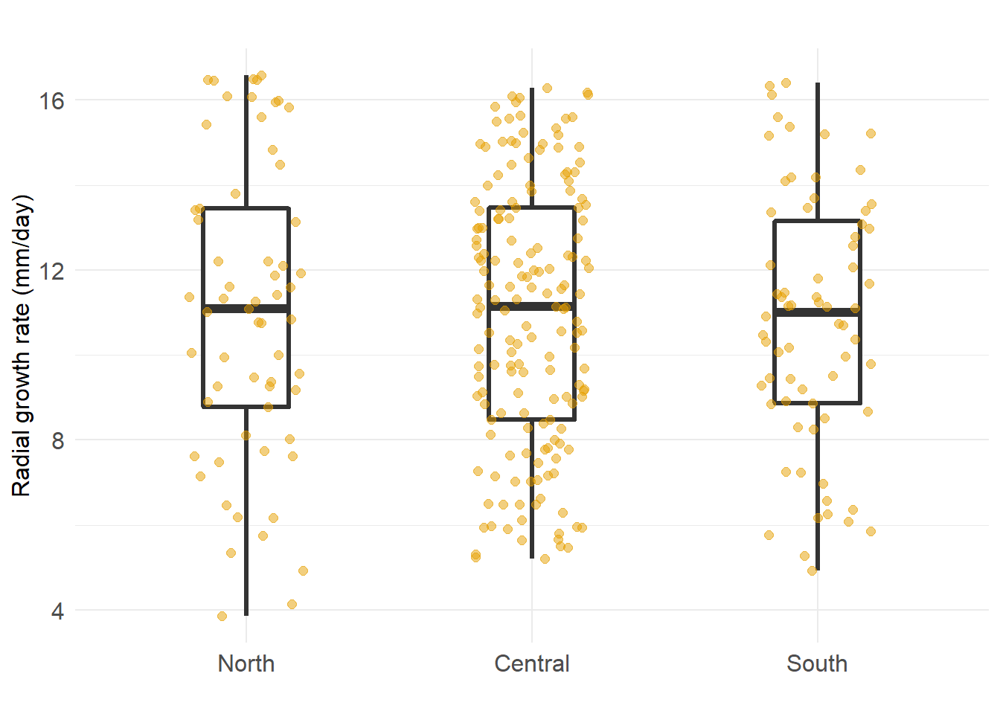
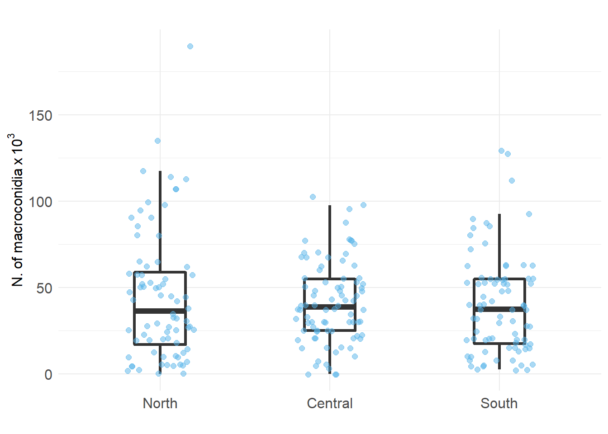
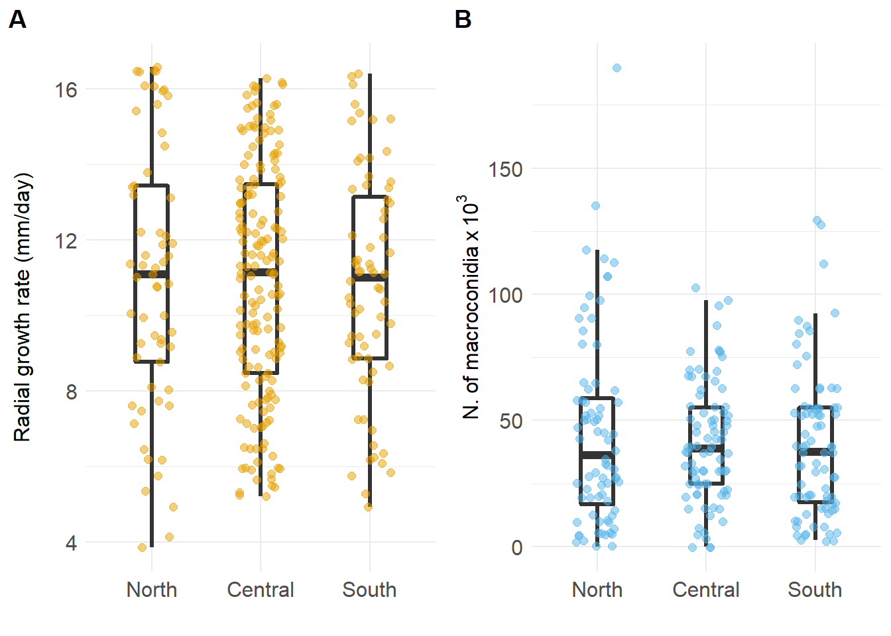
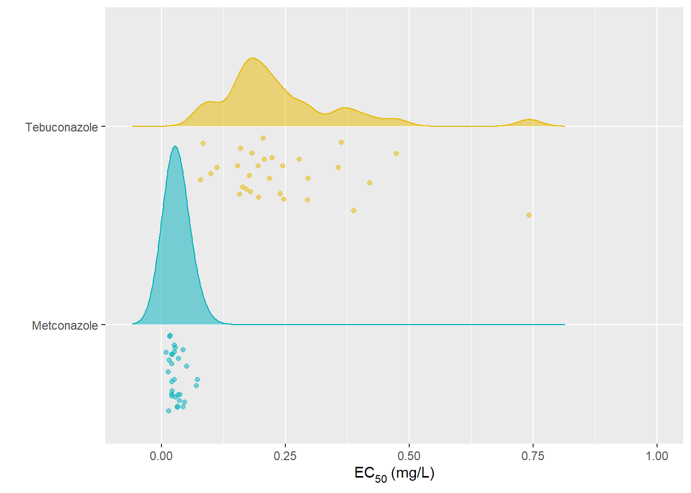

knitr::opts_chunk$set(echo = TRUE, warning = FALSE)library(tidyverse)
library(readxl)
library(agricolae)
library(ggjoy)
library(drc)
library(ggpubr)
library(rstatix)
library(ec50estimator)
library(car)
library(FactoMineR)
library(factoextra)mgr <- read_excel("data/lab_experiment.xlsx", sheet = "mycelia") %>%
group_by(isolate) %>%
mutate(rep1 = as.numeric(rep1),
rep2 = as.numeric(rep2))
nrow(mgr)## [1] 294mgr1 <- mgr %>% gather(rep, mg5, rep1:rep2)
head(mgr1)mgr2 <- mgr1 %>%
group_by(region, location, isolate, man_zone) %>%
summarize(mean_mg = mean(mg5),
mgr_day = mean_mg/5) ## `summarise()` has grouped output by 'region', 'location', 'isolate'. You can override using the `.groups` argument.mycelia.lm<-with(mgr2, lm(mgr_day~region))
summary(mycelia.lm)##
## Call:
## lm(formula = mgr_day ~ region)
##
## Residuals:
## Min 1Q Median 3Q Max
## -7.1829 -2.2922 0.1822 2.5028 5.5605
##
## Coefficients:
## Estimate Std. Error t value Pr(>|t|)
## (Intercept) 10.94530 0.24396 44.866 <2e-16 ***
## regionNorth 0.09757 0.47268 0.206 0.837
## regionSouth -0.10584 0.46188 -0.229 0.819
## ---
## Signif. codes: 0 '***' 0.001 '**' 0.01 '*' 0.05 '.' 0.1 ' ' 1
##
## Residual standard error: 3.162 on 291 degrees of freedom
## Multiple R-squared: 0.0004486, Adjusted R-squared: -0.006421
## F-statistic: 0.0653 on 2 and 291 DF, p-value: 0.9368anova(mycelia.lm)cv.model(mycelia.lm)## [1] 28.89769LSD.test(mycelia.lm,"region",console=TRUE)##
## Study: mycelia.lm ~ "region"
##
## LSD t Test for mgr_day
##
## Mean Square Error: 9.998408
##
## region, means and individual ( 95 %) CI
##
## mgr_day std r LCL UCL Min Max
## Central 10.94530 3.071720 168 10.46516 11.42544 5.205 16.285
## North 11.04287 3.528334 61 10.24605 11.83969 3.860 16.580
## South 10.83946 3.028164 65 10.06755 11.61137 4.925 16.400
##
## Alpha: 0.05 ; DF Error: 291
## Critical Value of t: 1.96815
##
## Groups according to probability of means differences and alpha level( 0.05 )
##
## Treatments with the same letter are not significantly different.
##
## mgr_day groups
## North 11.04287 a
## Central 10.94530 a
## South 10.83946 amycelium_mlh <- mgr2 %>%
group_by(man_zone) %>%
ggplot(aes(x=man_zone, y=mgr_day)) +
geom_boxplot(size = 1.1, width = 0.3) +
geom_jitter(size = 2, alpha = 0.5, width = 0.2, color = "#E69F00") +
scale_x_discrete(limits=c("North", "Central", "South")) +
scale_color_manual(values=c("#E69F00"))+
labs(y = "Radial growth rate (mm/day)",
x = "",
title = "") +
theme_minimal()+
theme(axis.text = element_text(size = 12),
plot.title = element_text(hjust = 0.5)) +
theme(text = element_text(size = 12))
mycelium_mlh
#ggsave("plots/mycelium_mhl.png", width = 7, height = 5, dpi = 300)cnd <- read_excel("data/lab_experiment.xlsx", sheet = "conidia")conidia.lm<-with(cnd, lm(conc_spores~region))
summary(conidia.lm)##
## Call:
## lm(formula = conc_spores ~ region)
##
## Residuals:
## Min 1Q Median 3Q Max
## -45.022 -21.389 -2.625 14.875 144.978
##
## Coefficients:
## Estimate Std. Error t value Pr(>|t|)
## (Intercept) 41.0119 3.3205 12.351 <2e-16 ***
## regionNorth 4.0100 4.8179 0.832 0.406
## regionSouth -0.8869 4.7543 -0.187 0.852
## ---
## Signif. codes: 0 '***' 0.001 '**' 0.01 '*' 0.05 '.' 0.1 ' ' 1
##
## Residual standard error: 30.43 on 237 degrees of freedom
## Multiple R-squared: 0.004793, Adjusted R-squared: -0.003605
## F-statistic: 0.5708 on 2 and 237 DF, p-value: 0.5659anova(conidia.lm)cv.model(conidia.lm)## [1] 72.48371LSD.test(conidia.lm,"region",console=TRUE)##
## Study: conidia.lm ~ "region"
##
## LSD t Test for conc_spores
##
## Mean Square Error: 926.1731
##
## region, means and individual ( 95 %) CI
##
## conc_spores std r LCL UCL Min Max
## Central 41.01190 23.74602 84 34.47040 47.55341 0.0 102.5
## North 45.02193 37.59925 76 38.14475 51.89912 0.0 190.0
## South 40.12500 29.05119 80 33.42195 46.82805 2.5 130.0
##
## Alpha: 0.05 ; DF Error: 237
## Critical Value of t: 1.970024
##
## Groups according to probability of means differences and alpha level( 0.05 )
##
## Treatments with the same letter are not significantly different.
##
## conc_spores groups
## North 45.02193 a
## Central 41.01190 a
## South 40.12500 acnd_mlh <- cnd %>%
group_by(man_zone) %>%
ggplot(aes(x=man_zone, y=conc_spores)) +
geom_boxplot(size = 1.1, width = 0.3, outlier.colour = NA) +
geom_jitter(size = 2, alpha = 0.5, width = 0.2, color = "#56B4E9") +
scale_x_discrete(limits=c("North", "Central", "South")) +
scale_color_manual(values=c("#56B4E9")) +
theme_minimal() +
labs(y = expression(N.~of~macroconidia~x~10 ^ {3}),
x = "",
title = "",
color = "",
fill = "" ) +
theme(axis.text = element_text(size = 12),
plot.title = element_text(hjust = 0.5)) +
theme(text = element_text(size = 12))
cnd_mlh
#ggsave("plots/cnd_mhl.png", width = 7, height = 5, dpi = 300)library(cowplot)
grid <- plot_grid(mycelium_mlh, cnd_mlh, ncol = 2, align = "v", labels = c("A", "B"))
grid
ggsave("figures/Figure_03.png", width = 10, height = 4, dpi = 300)fung <- read_excel("data/lab_experiment.xlsx", sheet = "fungicide") %>%
filter(isolate!="PH1")fung1 <- fung %>%
group_by(assay, fungicide, isolate, dose, rep) %>%
summarize(mgr = c(da+db)/2)## `summarise()` has grouped output by 'assay', 'fungicide', 'isolate', 'dose'. You can override using the `.groups` argument.## Checking the difference between assays
teb <- fung1 %>%
filter(fungicide!="Metconazole")
teb_lm<-with(teb, lm(mgr~assay))
summary(teb_lm)##
## Call:
## lm(formula = mgr ~ assay)
##
## Residuals:
## Min 1Q Median 3Q Max
## -31.34 -19.53 -6.34 19.61 45.47
##
## Coefficients:
## Estimate Std. Error t value Pr(>|t|)
## (Intercept) 31.8384 2.6699 11.925 <2e-16 ***
## assay -0.4175 1.6886 -0.247 0.805
## ---
## Signif. codes: 0 '***' 0.001 '**' 0.01 '*' 0.05 '.' 0.1 ' ' 1
##
## Residual standard error: 22.65 on 718 degrees of freedom
## Multiple R-squared: 8.513e-05, Adjusted R-squared: -0.001308
## F-statistic: 0.06113 on 1 and 718 DF, p-value: 0.8048anova(teb_lm)cv.model(teb_lm)## [1] 72.58303LSD.test(teb_lm,"assay",console=TRUE)##
## Study: teb_lm ~ "assay"
##
## LSD t Test for mgr
##
## Mean Square Error: 513.2359
##
## assay, means and individual ( 95 %) CI
##
## mgr std r LCL UCL Min Max
## 1 31.42087 22.98268 360 29.07671 33.76504 0.080 76.805
## 2 31.00339 22.32192 360 28.65922 33.34755 1.565 76.470
##
## Alpha: 0.05 ; DF Error: 718
## Critical Value of t: 1.963273
##
## least Significant Difference: 3.315149
##
## Treatments with the same letter are not significantly different.
##
## mgr groups
## 1 31.42087 a
## 2 31.00339 aassay1 <- teb %>%
filter(assay==1)
assay2 <- teb %>%
filter(assay==2)
assay2$rep[assay2$rep==1]<-3
assay2$rep[assay2$rep==2]<-4
assay2$assay[assay2$assay==2]<-1
teb1 <- rbind(assay1, assay2) %>%
arrange(isolate, dose)## Checking the difference between assays
met <- fung1 %>%
filter(fungicide!="Tebuconazole")
met_lm<-with(met, lm(mgr~assay))
summary(met_lm)##
## Call:
## lm(formula = mgr ~ assay)
##
## Residuals:
## Min 1Q Median 3Q Max
## -21.803 -17.744 -9.992 16.739 55.002
##
## Coefficients:
## Estimate Std. Error t value Pr(>|t|)
## (Intercept) 22.1300 2.6875 8.234 8.52e-16 ***
## assay -0.3271 1.6997 -0.192 0.847
## ---
## Signif. codes: 0 '***' 0.001 '**' 0.01 '*' 0.05 '.' 0.1 ' ' 1
##
## Residual standard error: 22.8 on 718 degrees of freedom
## Multiple R-squared: 5.156e-05, Adjusted R-squared: -0.001341
## F-statistic: 0.03702 on 1 and 718 DF, p-value: 0.8475anova(met_lm)cv.model(met_lm)## [1] 105.3837LSD.test(met_lm,"assay",console=TRUE)##
## Study: met_lm ~ "assay"
##
## LSD t Test for mgr
##
## Mean Square Error: 520.0407
##
## assay, means and individual ( 95 %) CI
##
## mgr std r LCL UCL Min Max
## 1 21.80293 22.56728 360 19.44328 24.16258 0 76.805
## 2 21.47587 23.03909 360 19.11622 23.83553 0 76.470
##
## Alpha: 0.05 ; DF Error: 718
## Critical Value of t: 1.963273
##
## least Significant Difference: 3.337054
##
## Treatments with the same letter are not significantly different.
##
## mgr groups
## 1 21.80293 a
## 2 21.47587 aassay1_met <- met %>%
filter(assay==1)
assay2_met <- met %>%
filter(assay==2)
assay2_met$rep[assay2_met$rep==1]<-3
assay2_met$rep[assay2_met$rep==2]<-4
assay2_met$assay[assay2_met$assay==2]<-1
met1 <- rbind(assay1_met, assay2_met) %>%
arrange(isolate, dose)fung_all <- rbind(teb1, met1)library(ec50estimator)
library(drc)
ec50 = estimate_EC50(mgr~dose,
data = fung_all,
isolate_col = "isolate",
strata_col = c("fungicide"),
interval = "delta",
fct = LL.4())
ec50 <- ec50 %>%
rename(
isolate = ID)
## Export data
#write.csv(ec50, file = "data/ec50_region.csv")ec50_all <- read_csv("data/ec50_region.csv")
## Tebuconazole
ec50_teb <- ec50_all %>%
filter(fungicide =="Tebuconazole")
ec50_teb %>%
get_summary_stats(Estimate, type = "full")## South
teb_south <- ec50_teb %>%
filter(region == "South")
## Central
teb_central <- ec50_teb %>%
filter(region == "Central")
## North
teb_north <- ec50_teb %>%
filter(region == "North")
## Kolmogorov-Smornov test
#H0 = equal distribution
#H1 = different distributions
ks.test(teb_south$Estimate, teb_central$Estimate, alternative = "two.side")##
## Two-sample Kolmogorov-Smirnov test
##
## data: teb_south$Estimate and teb_central$Estimate
## D = 0.2, p-value = 0.9945
## alternative hypothesis: two-sidedks.test(teb_south$Estimate, teb_north$Estimate, alternative = "two.side")##
## Two-sample Kolmogorov-Smirnov test
##
## data: teb_south$Estimate and teb_north$Estimate
## D = 0.6, p-value = 0.05245
## alternative hypothesis: two-sidedks.test(teb_central$Estimate, teb_north$Estimate, alternative = "two.side")##
## Two-sample Kolmogorov-Smirnov test
##
## data: teb_central$Estimate and teb_north$Estimate
## D = 0.4, p-value = 0.4175
## alternative hypothesis: two-sided## Tebuconazole
ec50_met <- ec50_all %>%
filter(fungicide =="Metconazole")
ec50_met %>%
get_summary_stats(Estimate, type = "full")## South
met_south <- ec50_met %>%
filter(region == "South")
## Central
met_central <- ec50_met %>%
filter(region == "Central")
## North
met_north <- ec50_met %>%
filter(region == "North")
## Kolmogorov-Smornov test
#H0 = equal distribution
#H1 = different distributions
ks.test(met_south$Estimate, met_central$Estimate, alternative = "two.side")##
## Two-sample Kolmogorov-Smirnov test
##
## data: met_south$Estimate and met_central$Estimate
## D = 0.4, p-value = 0.4175
## alternative hypothesis: two-sidedks.test(met_south$Estimate, met_north$Estimate, alternative = "two.side")##
## Two-sample Kolmogorov-Smirnov test
##
## data: met_south$Estimate and met_north$Estimate
## D = 0.5, p-value = 0.1678
## alternative hypothesis: two-sidedks.test(met_central$Estimate, met_north$Estimate, alternative = "two.side")##
## Two-sample Kolmogorov-Smirnov test
##
## data: met_central$Estimate and met_north$Estimate
## D = 0.6, p-value = 0.05245
## alternative hypothesis: two-sidedec50_all %>%
ggplot(aes(x = Estimate, fungicide, y = fungicide, color = fungicide, point_color = fungicide, fill = fungicide)) +
geom_density_ridges(
jittered_points = TRUE,
size = 0.5,
width = 0.2, alpha = 0.5, scale = 0.9, position = "raincloud") +
scale_fill_manual(values = c("#00AFBB", "#E7B800")) +
scale_color_manual(values = c("#00AFBB", "#E7B800"), guide = "none") +
scale_discrete_manual("point_color", values = c("#00AFBB", "#E7B800"), guide = "none") +
labs(x = expression("EC"[50]^{}*~"(mg/L)"),
y = "") +
theme(legend.position = "none")+
xlim (-0.06,1)## Picking joint bandwidth of 0.0239
ggsave("figures/Figure_05.png", width = 7, height = 4, dpi = 300)## Picking joint bandwidth of 0.0239